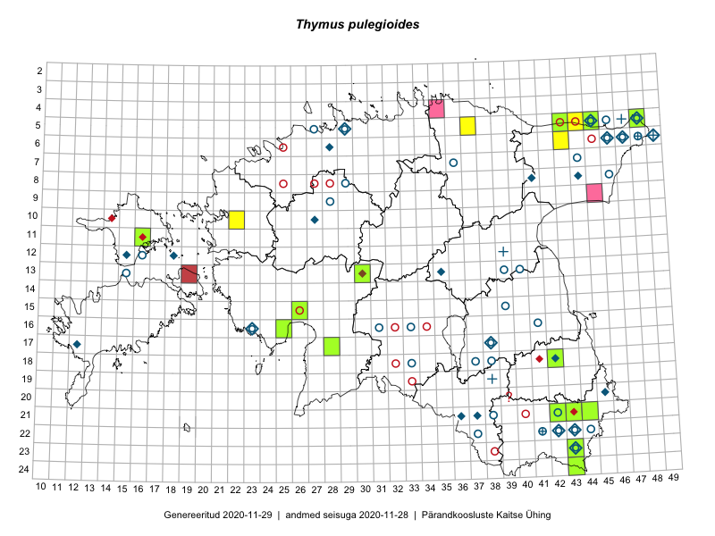

Thymus pulegioides
Uuendatud: 2016-12-02
Kaardile koondatud taksonid: Thymus pulegioides L.

Kaart põhineb 10 kirjel, neist vaatlusi 8 ja eksemplare 2. Taksonit on leitud 9 ruudust.
Viited andmebaasikirjetele
- Ott Luuk, Peedu Saar: 2015-08-13: 24-43: ala
- Tiit Hallikma, Toomas Kukk: 2015-05-30: 06-43: ala
- Meeli Mesipuu, Timo Luhamäe: 2015-07-23: 05-48: ala
- Eeva-Maria Jeletsky, Tarmo Niitla: 2015-06-19: 11-16: ala
- Timo Luhamäe, Meeli Mesipuu: 2015-07-23: 05-48: GPS punkt
- Tõnu Ploompuu: 2015-08-21: 10-22: ala
- Tõnu Ploompuu, Eerik Leibak: 2016-07-27: 05-37: GPS punkt
- Toomas Kukk, Peedu Saar: 2016-09-13: 05-44: GPS punkt
- Peedu Saar, Liina Oja: 2015-06-09: 17-28: GPS punkt
- Peedu Saar, Karin Kikas: 2016-08-18: 21-44: GPS punkt